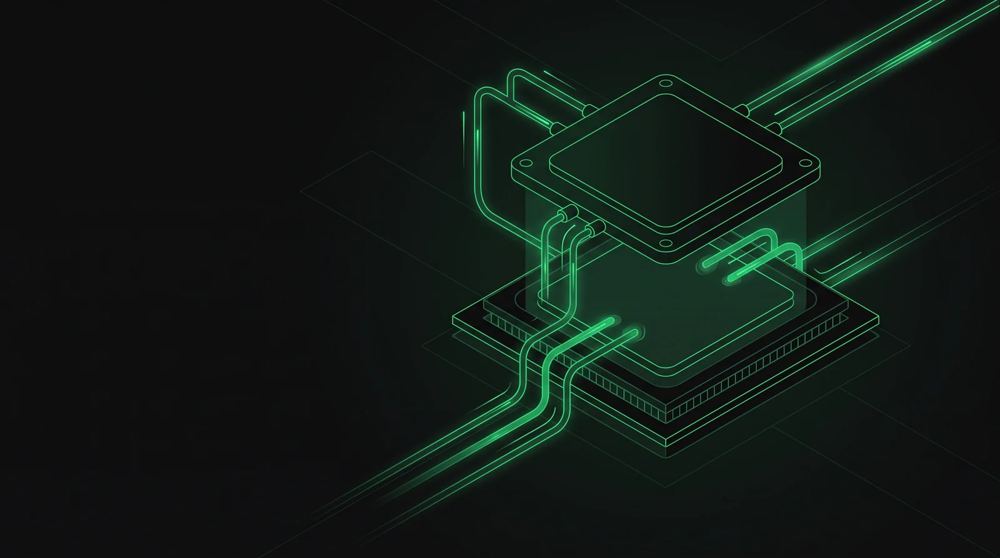

If you've read our PUE explainer, you already know that cooling is the largest source of overhead energy in most data centers — the gap between a PUE of 1.1 and a PUE of 2.0 is, more than anything else, a cooling story. What that guide didn't cover is how cooling actually works, and why the industry is in the middle of the biggest shift in cooling method it has seen in decades.
Why cooling is the building's real client
Every other system in a data center — structure, power, even the site itself — exists partly in service of one job: keeping silicon at a safe operating temperature. Modern processors and GPUs generate enormous, concentrated heat, and if that heat isn't removed fast enough, the hardware throttles itself or shuts down entirely to avoid damage. Cooling isn't a comfort system the way HVAC is in an office building; it's closer to life support for the building's actual occupant, which is the compute itself.
That framing matters for architects specifically, because it means cooling strategy isn't a downstream mechanical decision you bolt on after the floor plan is set. It's one of the first constraints that should shape the plan, alongside Tier classification and site selection.
How air cooling works
Air cooling is the traditional approach, and it's still the majority of installed data center capacity worldwide. The mechanics are straightforward: large CRAC or CRAH units (Computer Room Air Conditioning / Air Handling) push cold air up through a raised floor plenum and out through perforated floor tiles positioned in front of server racks. Servers pull that cold air in through their front intake, it absorbs heat as it passes over internal components, and warm exhaust air exits out the back.
Well-run air-cooled facilities use hot aisle / cold aisle containment — physically separating the cold intake aisles from the hot exhaust aisles with barriers or curtains, so the two airstreams don't mix and force the cooling system to work harder than necessary. This single design decision is one of the cheapest, highest-leverage moves available to lower a facility's PUE, and it's purely architectural: it's about aisle layout and containment geometry, not equipment specification.
Where air cooling hits a wall
Air is a genuinely poor conductor of heat compared to liquid, and that gap becomes the whole story once rack density climbs. Traditional enterprise racks might draw 5–10kW; a modern AI training rack packed with GPUs can draw well over 100kW in the same footprint. Air cooling simply cannot move that much heat out of that small a volume fast enough — you'd need airflow velocities and volumes that become impractical, noisy, and eventually physically impossible within a normal rack enclosure.
This is not a hypothetical future problem. It's the reason nearly every hyperscale and AI-infrastructure announcement in the last two years has included some form of liquid cooling, and it's a direct consequence of the same AI buildout driving the salary and hiring trends we cover in our salary guide.
How liquid cooling works

Liquid cooling replaces or supplements air as the heat-transfer medium, using a coolant with far higher thermal conductivity to pull heat away from components. Two variants dominate current data center design:
- Direct-to-chip (D2C): cold plates sit directly on top of the highest-heat components — CPUs, GPUs, memory — with coolant circulating through tubing to carry heat away, while the rest of the server (storage, networking) often stays air-cooled. This is the hybrid approach behind most current AI rack designs, including deployments like NVIDIA's GB200.
- Immersion cooling: entire servers are submerged directly in a dielectric fluid that doesn't conduct electricity, removing heat from every surface at once. This handles the highest densities available today but requires a fundamentally different rack, floor, and maintenance approach than anything air-cooling infrastructure was built around.
Both approaches share a consequence architects need to plan for early: liquid cooling means real plumbing — supply and return piping, coolant distribution units (CDUs), leak detection, and in immersion's case, tanks — running through spaces that were never designed to carry fluid near electrical equipment.
Air vs. liquid, side by side
| Air Cooling | Liquid Cooling | |
|---|---|---|
| Typical density ceiling | Roughly 15–20kW per rack before it struggles | 50kW to 200kW+ per rack, depending on method |
| Infrastructure | CRAC/CRAH units, raised floor, containment | CDUs, piping, cold plates or immersion tanks |
| PUE impact | Typically 1.4–1.8 without optimization | Can push PUE toward 1.1–1.2 |
| Water usage | Often higher, depending on method (evaporative cooling) | Can be lower in closed-loop systems |
| Failure tolerance | Minutes before thermal limits are reached | Often only seconds — tighter coupling to power systems |
| Best fit | General enterprise IT, lower-density workloads | AI training/inference, high-performance compute |
Neither approach is strictly "better" in the abstract — they're matched to different density and workload profiles. The trend line, though, is unmistakable: as AI workloads become a larger share of new data center capacity, liquid cooling is moving from a specialized option to a baseline design assumption on an increasing share of new projects.
What this means for the architect's floor plan
A cooling method isn't just a mechanical spec — it's a set of real, physical constraints on the building itself:
- Structural loading changes. Liquid-filled piping, CDUs, and especially immersion tanks add real weight that the structural engineer needs to know about at the concept stage, not after the mechanical drawings are done.
- Routing gets more complex. Air cooling routes through ducts and plenums; liquid cooling routes through pressurized piping that has to avoid electrical equipment, needs leak containment, and typically needs its own dedicated risers.
- Floor-to-floor heights shift. Raised floor depth requirements change between the two approaches, and CDU placement often needs dedicated mechanical space that a purely air-cooled design wouldn't require.
- Hybrid is the near-term reality, not an edge case. Most current AI data centers run direct-to-chip cooling for compute alongside conventional air cooling for storage and networking — meaning the floor plan has to accommodate both systems simultaneously, coordinated through the same BIM model referenced in our architect guide.
Redundancy applies to cooling too
Cooling redundancy follows the exact same N, N+1, and 2N logic covered in our redundancy guide — a facility can run N+1 cooling (one spare chiller or CDU covering a single failure) or 2N cooling (two fully independent, parallel cooling systems), independently of whatever redundancy level its power system uses. Since liquid-cooled systems tolerate failure for only seconds rather than minutes, cooling redundancy tends to get taken more seriously — and specified at a higher level — on liquid-cooled projects than it historically has been on air-cooled ones.
Air cooling remains fine for most enterprise workloads, but AI-density racks have pushed liquid cooling from a niche option to a mainstream design requirement — and that shift changes structural loading, routing, and floor-to-floor heights well before it changes anything on a mechanical schedule.
Cooling is the single biggest lever on PUE
Everything in this guide connects back to one number: cooling choices are, more than any other single factor, what separates a data center with a PUE near 1.1 from one sitting above 1.8. Hot/cold aisle containment, free-cooling climate strategy, and the shift to liquid cooling are all, fundamentally, PUE decisions wearing mechanical-engineering language. If you haven't already, it's worth reading the full PUE breakdown to see exactly how these pieces connect to the number every client will eventually ask you about.
Air cooling moves heat through airflow and containment; liquid cooling moves it through direct contact with a much more efficient medium. AI density is forcing the shift from the first to a hybrid of both — and for the architect, that shift is a structural and routing conversation, not just an equipment upgrade.